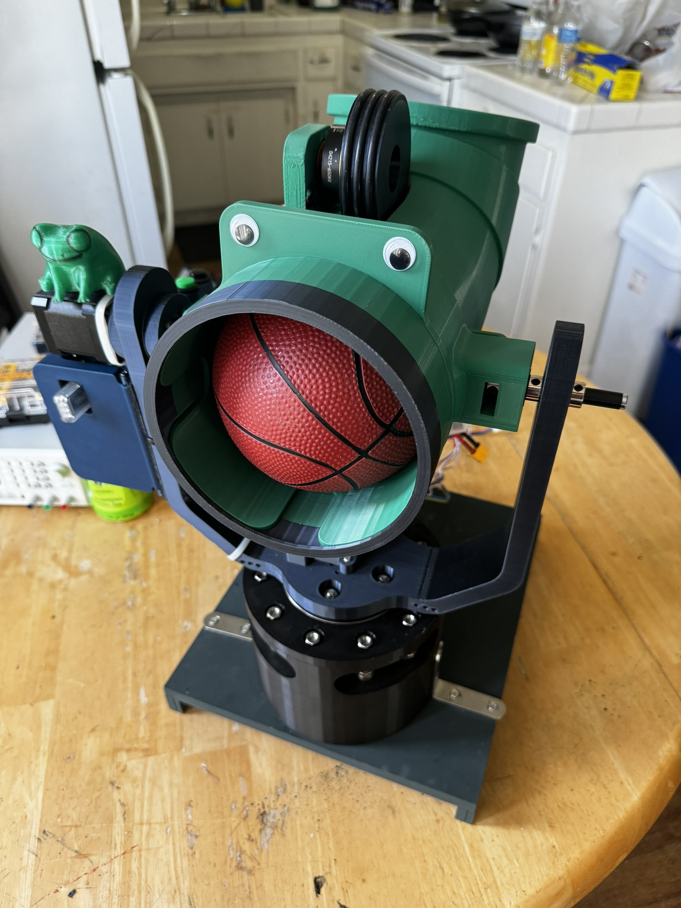
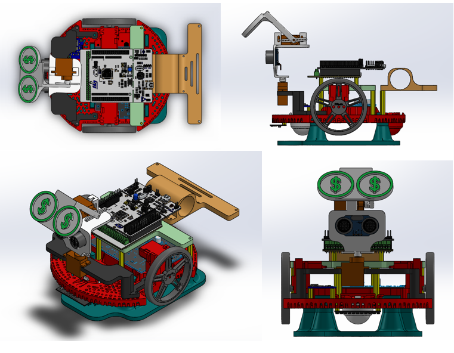
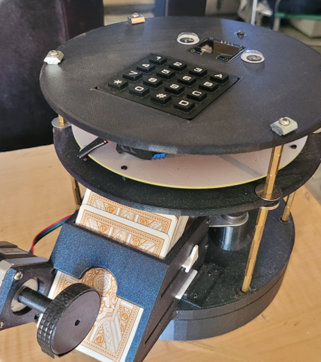
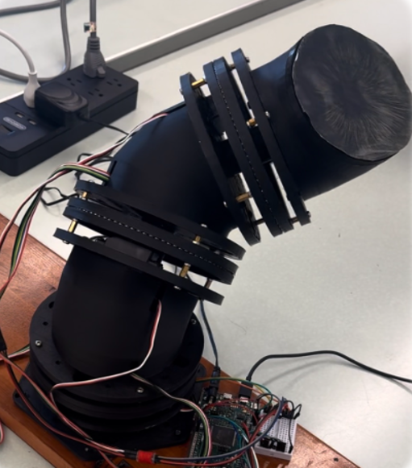
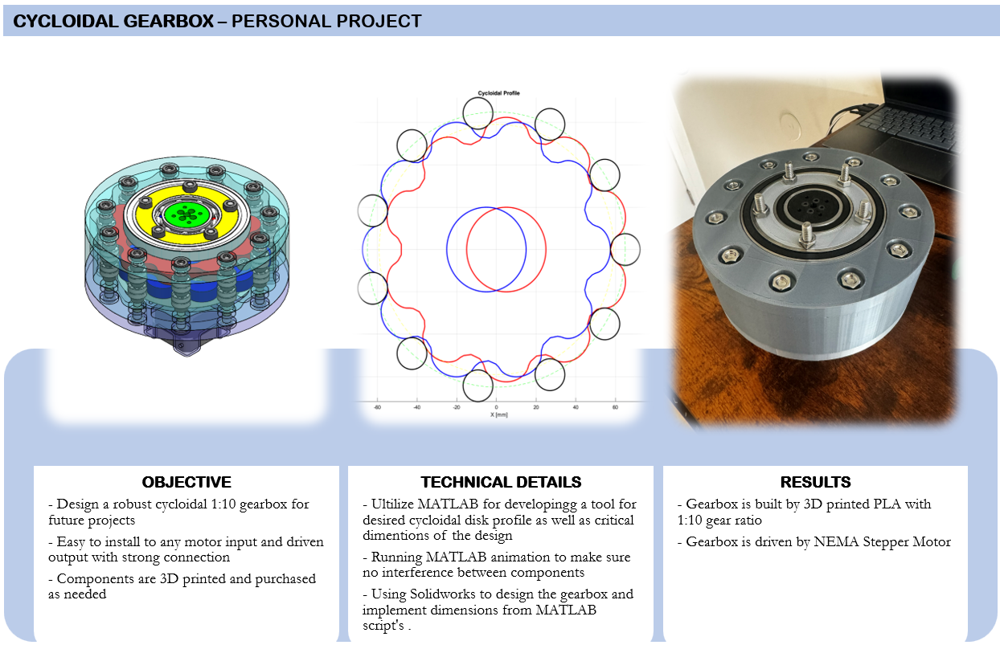
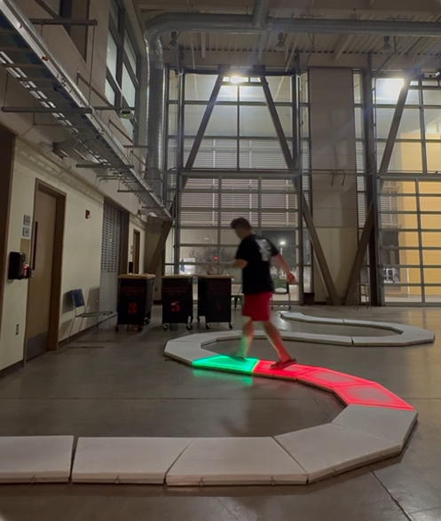
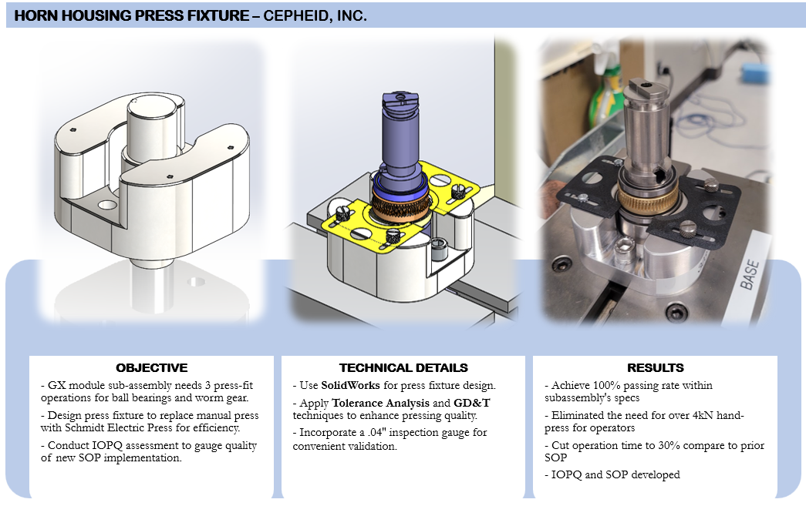
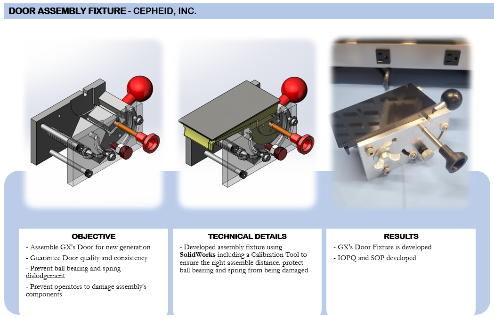
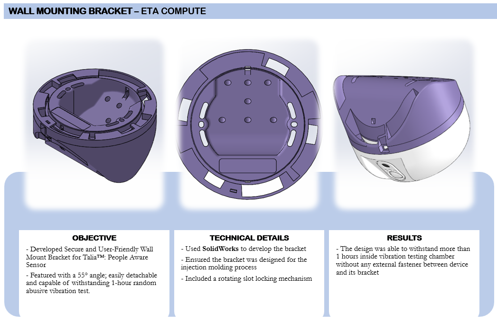
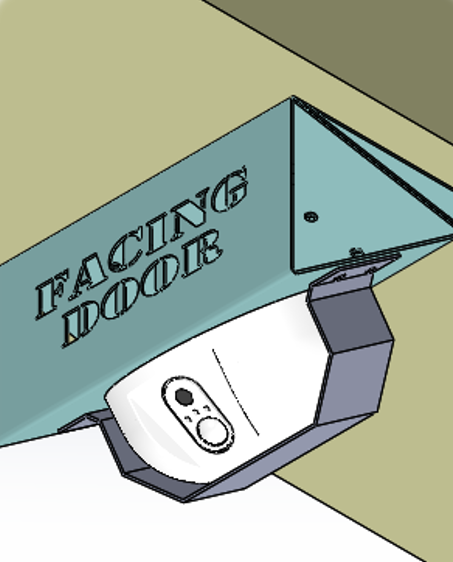

Loading...
Searching...
No Matches
PORTFOLIO
BACKGROUND
Thank you for visiting my portfolio webpage. My name is Vinh Vo, and I hold MS in Mechanical Engineering with a concentration in Mechatronics.
This website showcases the culmination of my academic and professional efforts as a Mechanical Engineering student at Cal Poly. It features a diverse range of projects, including personal mechatronics projects, senior projects at Cal Poly, and those undertaken during my internships.
While the website provides comprehensive details about each project, I encourage you to explore any linked external resources for a deeper understanding. Additionally, my YouTube channel features videos that bring these projects to life.
PERSONAL INFORMATION

Name: VINH VO
Email: vinhv.nosp@m.o.ca.nosp@m.reer@.nosp@m.gmai.nosp@m.l.com
LinkedIn: https://www.linkedin.com/in/vinhvo98/
Youtube: https://www.youtube.com/channel/UCh_4F4CJVqvAhHmCMTvIb-w
Github: https://github.com/vvinhvvo98
Phone: +1(714)-988-5363
Major: Mechanical Engineer at Cal Poly San Luis Obispo
Date: May 25, 2024
MECHATRONIC PROJECTS
BASKETBALL LAUNCHER

| Ojective | Technical Detail | Result |
|---|---|---|
| - Developed a basketball launcher with 2 DOF, controlled wirelessly by a glove with an IMU sensor. - Designed a custom PCB centered around a chosen MCU. - Integrated limit switches and an emergency stop to address safety concerns. - Implemented 3D printed cycloidal gearbox as the foundation for the launcher. | - Used Fushion 360 to developed customized PCBA centered by STM32F411CEU6 MCU - Used HC-05 bluetooth module to wirelessly control the launcher with IMU sensor - Used SolidWorks to develop CAD model - Used 2 NEMA 17 stepper motors with gearbox to control 2 DOFs of motions - Used 2 D4215 BLDC motor to lauch bal. | - Successfully launch the basketball 5 m away from the barrel - The launcher motions is controlled according to feedback data from IMU sensor on the controller - PCBA is manufatured and soldered - The launcher has a robust foundation that is including the 3D printed cycloidal gearbox |
ROMI TWO-WHEEL ROBOT

| Ojective | Technical Detail | Result |
|---|---|---|
| - Integrated ROMI kit with Nucleo STM32 Microcontroller -Be able to detect curve, cross, dash and 90° turn line pattern -Be able to avoid a wall obstacle on the way -Be able to return exact Home location -Complete the challenge as fast as it can for competition. | - Integrate PID controller for 2 wheels that can drive at desire speed - Integrate PID controller to analog line sensor to smoothly follow different line curve - Integrate IMU sensor that will read the and remember the yaw angle and XY coordinate - Integrate DC servo and Ultrasonic sensor to detect wall obstacle along the path. | - The robot is able to: - Follow any combination of curve, cross, dash, and straight line - Avoid wall with any wall size - Return to Home position within ±5 mm - Finish the whole challenge in 32 second |
CARD DEALER ROBOT

| Ojective | Technical Detail | Result |
|---|---|---|
| - Develop an accurate and programmable dealer robot. - Enable automated card dealing for various games. - Enhance gaming experience through precision, speed, and customization. | - Create an internal gear and pinion mechanism with a precision stepper motor for controlled spinning. - Design a customized PCB for an enhanced aesthetic appeal. - Craft a coded script to offer game flexibility and choice. | - The robot handles variable player and card combinations effortlessly. - Achieves a spinning speed of 100 rpm. - Features built-in games such as Big 2, Blackjack, Baccarat, and Poker. |
SNAKE-LIKE ROBOTIC ARM

| Ojective | Technical Detail | Result |
|---|---|---|
| - Building a Snake-like robotics arm system. - Include 3 45° offset swivel joints per segment for 3 degree of freedom. - Implement forward and inverse kinematics for precise movement control. - Utilize MATLAB App for arm manipulation. | - Design 3D swivel joints in Solidworks with DC motor, shaft encoder, and 1:3 gear ratio. - Analyze forward and inverse kinematics with DH parameters. - Use MATLAB for workspace plotting and angle-based joint animation. - Prevent arm damage by analyzing singularity through the Jacobian matrix. | - Arm operates effectively with implemented forward and inverse kinematics. - Successfully create MATLAB App GUI for inputs kinematics parameters. - Serial communication links MATLAB GUI and Arduino for arm motion control. |
CYCLOIDAL GEARBOX

| Ojective | Technical Detail | Result |
|---|---|---|
| - Design a robust cycloidal 1:10 gearbox for future projects. - Easy to install to any motor input and driven output with strong connection. - Components are 3D printed and purchased as needed. | - Ultilize MATLAB for developingg a tool for desired cycloidal disk profile as well as critical dimentions of the design. - Running MATLAB animation to make sure no interference between components. - Using Solidworks to design the gearbox and implement dimensions from MATLAB script's. | - Gearbox is built by 3D printed PLA with 1:10 gear ratio. - Gearbox is driven by NEMA Stepper Motor. |
CAL POLY SENIOR PROJECT
PATH OF LIGHT & SOUND

| Ojective | Technical Detail | Result |
|---|---|---|
| - Create a light-up, musical path that is interactive for a themed Christmas event - Capable of supporting children and adults (up to 300 lbf) - Manufacture 25 tiles play Jingle Bells - Programmable LED lights and sounds | - White HDPE on top for light diffusion. - Using 8 UHMW rods for supporting weight. - Aluminum 90° angle frame. - Limit switches activated. - Raspberry Pi Pico microcontroller with UART communication bewteen tiles. | - Manufatured 25 tiles that can play 25 different notes (Jingle Bells) for Christmast. - The tile can witstand more than 300 lbs of force without buckling. - Including a GUI software that can program all 25 tiles with different colors and songs. |
INTERNSHIP PROJECTS
HORN HOUSING PRESS FIXTURE

| Ojective | Technical Detail | Result |
|---|---|---|
| - GX module sub-assembly needs 3 press-fit operations for ball bearings and worm gear. - Design press fixture to replace manual press with Schmidt Electric Press for efficiency. - Conduct IOPQ assessment to gauge quality of new SOP implementation. | - Use SolidWorks for press fixture design. - Apply Tolerance Analysis and GD&T techniques to enhance pressing quality. - Incorporate a .04 inches inspection gauge for convenient validation. | - Achieve 100% passing rate within subassembly's specs. - Eliminated the need for over 4kN hand-press for operators. - Cut operation time to 30% compare to prior SOP. - IOPQ and SOP developed. |
DOOR ASSEMBLY FIXTURE

| Ojective | Technical Detail | Result |
|---|---|---|
| - Revise Assembly GX's Door fixture for new generation. - Guarantee Door quality and consistency. - Prevent ball bearing and spring dislodgement. - Prevent operators to damage assembly's components. | - Revise assembly fixture using SolidWorks including a Calibration Tool to ensure the right assemble distance so that protect ball bearing and spring from being damaged. | - GX's Door Fixture is revised with new feature to improve safety and prevent potential failure to the assembly. |
WALL MOUNTING BRACKET

| Ojective | Technical Detail | Result |
|---|---|---|
| - Developed Secure and User-Friendly Wall Mount Bracket for Talia™: People Aware Sensor - Featured with a 55° angle; easily detachable and capable of withstanding 1-hour random abusive vibration test. | - Used SolidWorks to develop the bracket. - Ensured the bracket was designed for the injection molding process. - Included a rotating slot locking mechanism. | - The design was able to withstand more than 1 hours inside vibration testing chamber without any external fastener between device and its bracket. |
BUS MOUNTING BRACKET

| Ojective | Technical Detail | Result |
|---|---|---|
| - Design a robust bracket for Talia™: People Aware Sensor, optimized for secure bus installation - The bracket with a 55° angle that is both detachable and sturdy enough to withstand a 12-hour random abusive vibration test | - Used SolidWorks' Sheet Metal Design for the bracket's development - Incorporated a rotating slot for device placement and a U-bracket for external security | - The design was able to withstand more than 12 hours inside vibration testing chamber. |